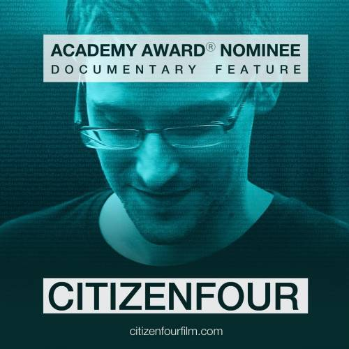

Citizenfour
Watch - Genres : Documentary
- Actor : Laura Poitras
- Director : Laura Poitras
- Country : USA
- Movie : Citizenfour
- Duration : 114 min
- Release : 2014
Description:
Synopsis: In January 2013, Laura Poitras, an American documentary film director/producer who had been working for several years on a film about monitoring programs in the US that were the result of the September 11 attacks, receives an encrypted e-mail from a stranger who calls himself, "Citizenfour." In it, he offers her inside information about illegal wiretapping practices of the US National Security Agency (NSA) and other intelligence agencies. In June 2013, accompanied by investigative journalist Glenn Greenwald and The Guardian intelligence reporter Ewen MacAskill, she travels to Hong Kong with her camera for the first meeting with the stranger in a hotel, who reveals himself as Edward Snowden. Scenes of their meeting take place in Snowden's hotel room, where he maintains his privacy.